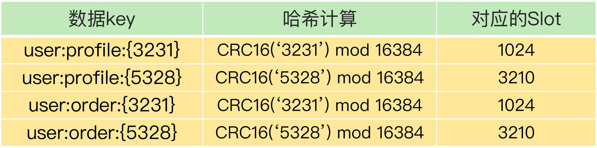

- 00 开篇词 这样学Redis，才能技高一筹.md.html
- 01 基本架构：一个键值数据库包含什么？.md.html
- 02 数据结构：快速的Redis有哪些慢操作？.md.html
- 03 高性能IO模型：为什么单线程Redis能那么快？.md.html
- 04 AOF日志：宕机了，Redis如何避免数据丢失？.md.html
- 05 内存快照：宕机后，Redis如何实现快速恢复？.md.html
- 06 数据同步：主从库如何实现数据一致？.md.html
- 07 哨兵机制：主库挂了，如何不间断服务？.md.html
- 08 哨兵集群：哨兵挂了，主从库还能切换吗？.md.html
- 09 切片集群：数据增多了，是该加内存还是加实例？.md.html
- 10 第1～9讲课后思考题答案及常见问题答疑.md.html
- 11 “万金油”的String，为什么不好用了？.md.html
- 12 有一亿个keys要统计，应该用哪种集合？.md.html
- 13 GEO是什么？还可以定义新的数据类型吗？.md.html
- 14 如何在Redis中保存时间序列数据？.md.html
- 15 消息队列的考验：Redis有哪些解决方案？.md.html
- 16 异步机制：如何避免单线程模型的阻塞？.md.html
- 17 为什么CPU结构也会影响Redis的性能？.md.html
- 18 波动的响应延迟：如何应对变慢的Redis？（上）.md.html
- 19 波动的响应延迟：如何应对变慢的Redis？（下）.md.html
- 20 删除数据后，为什么内存占用率还是很高？.md.html
- 21 缓冲区：一个可能引发“惨案”的地方.md.html
- 22 第11～21讲课后思考题答案及常见问题答疑.md.html
- 23 旁路缓存：Redis是如何工作的？.md.html
- 24 替换策略：缓存满了怎么办？.md.html
- 25 缓存异常（上）：如何解决缓存和数据库的数据不一致问题？.md.html
- 26 缓存异常（下）：如何解决缓存雪崩、击穿、穿透难题？.md.html
- 27 缓存被污染了，该怎么办？.md.html
- 28 Pika：如何基于SSD实现大容量Redis？.md.html
- 29 无锁的原子操作：Redis如何应对并发访问？.md.html
- 30 如何使用Redis实现分布式锁？.md.html
- 31 事务机制：Redis能实现ACID属性吗？.md.html
- 32 Redis主从同步与故障切换，有哪些坑？.md.html
- 33 脑裂：一次奇怪的数据丢失.md.html
- 34 第23~33讲课后思考题答案及常见问题答疑.md.html
- 35 Codis VS Redis Cluster：我该选择哪一个集群方案？.md.html
- 36 Redis支撑秒杀场景的关键技术和实践都有哪些？.md.html
- 37 数据分布优化：如何应对数据倾斜？.md.html
- 38 通信开销：限制Redis Cluster规模的关键因素.md.html
- 39 Redis 6.0的新特性：多线程、客户端缓存与安全.md.html
- 40 Redis的下一步：基于NVM内存的实践.md.html
- 41 第35～40讲课后思考题答案及常见问题答疑.md.html
- 加餐 01 经典的Redis学习资料有哪些？.md.html
- 加餐 02 用户Kaito：我是如何学习Redis的？.md.html
- 加餐 03 用户Kaito：我希望成为在压力中成长的人.md.html
- 加餐 04 Redis客户端如何与服务器端交换命令和数据？.md.html
- 加餐 05 Redis有哪些好用的运维工具？.md.html
- 加餐 06 Redis的使用规范小建议.md.html
- 加餐 07 从微博的Redis实践中，我们可以学到哪些经验？.md.html
- 结束语 从学习Redis到向Redis学习.md.html
- 捐赠
37 数据分布优化：如何应对数据倾斜？
在切片集群中，数据会按照一定的分布规则分散到不同的实例上保存。比如，在使用 Redis Cluster 或 Codis 时，数据都会先按照 CRC 算法的计算值对 Slot（逻辑槽）取模，同时，所有的 Slot 又会由运维管理员分配到不同的实例上。这样，数据就被保存到相应的实例上了。
虽然这种方法实现起来比较简单，但是很容易导致一个问题：数据倾斜。
数据倾斜有两类。
- 数据量倾斜：在某些情况下，实例上的数据分布不均衡，某个实例上的数据特别多。
- 数据访问倾斜：虽然每个集群实例上的数据量相差不大，但是某个实例上的数据是热点数据，被访问得非常频繁。
如果发生了数据倾斜，那么保存了大量数据，或者是保存了热点数据的实例的处理压力就会增大，速度变慢，甚至还可能会引起这个实例的内存资源耗尽，从而崩溃。这是我们在应用切片集群时要避免的。
今天这节课，我就来和你聊聊，这两种数据倾斜是怎么发生的，我们又该怎么应对。
数据量倾斜的成因和应对方法
首先，我们来看数据量倾斜的成因和应对方案。
当数据量倾斜发生时，数据在切片集群的多个实例上分布不均衡，大量数据集中到了一个或几个实例上，如下图所示：

那么，数据量倾斜是怎么产生的呢？这主要有三个原因，分别是某个实例上保存了 bigkey、Slot 分配不均衡以及 Hash Tag。接下来，我们就一个一个来分析，同时我还会给你讲解相应的解决方案。
bigkey 导致倾斜
第一个原因是，某个实例上正好保存了 bigkey。bigkey 的 value 值很大（String 类型），或者是 bigkey 保存了大量集合元素（集合类型），会导致这个实例的数据量增加，内存资源消耗也相应增加。
而且，bigkey 的操作一般都会造成实例 IO 线程阻塞，如果 bigkey 的访问量比较大，就会影响到这个实例上的其它请求被处理的速度。
其实，bigkey 已经是我们课程中反复提到的一个关键点了。为了避免 bigkey 造成的数据倾斜，一个根本的应对方法是，我们在业务层生成数据时，要尽量避免把过多的数据保存在同一个键值对中。
此外，如果 bigkey 正好是集合类型，我们还有一个方法，就是把 bigkey 拆分成很多个小的集合类型数据，分散保存在不同的实例上。
我给你举个例子。假设 Hash 类型集合 user:info 保存了 100 万个用户的信息，是一个 bigkey。那么，我们就可以按照用户 ID 的范围，把这个集合拆分成 10 个小集合，每个小集合只保存 10 万个用户的信息（例如小集合 1 保存的是 ID 从 1 到 10 万的用户信息，小集合 2 保存的是 ID 从 10 万零 1 到 20 万的用户）。这样一来，我们就可以把一个 bigkey 化整为零、分散保存了，避免了 bigkey 给单个切片实例带来的访问压力。
需要注意的是，当 bigkey 访问量较大时，也会造成数据访问倾斜，我一会儿再给你讲具体怎么应对。
接下来，我们再来看导致数据量倾斜的第二个原因：Slot 分配不均衡。
Slot 分配不均衡导致倾斜
如果集群运维人员没有均衡地分配 Slot，就会有大量的数据被分配到同一个 Slot 中，而同一个 Slot 只会在一个实例上分布，这就会导致，大量数据被集中到一个实例上，造成数据倾斜。
我以 Redis Cluster 为例，来介绍下 Slot 分配不均衡的情况。
Redis Cluster 一共有 16384 个 Slot，假设集群一共有 5 个实例，其中，实例 1 的硬件配置较高，运维人员在给实例分配 Slot 时，就可能会给实例 1 多分配些 Slot，把实例 1 的资源充分利用起来。
但是，我们其实并不知道数据和 Slot 的对应关系，这种做法就可能会导致大量数据正好被映射到实例 1 上的 Slot，造成数据倾斜，给实例 1 带来访问压力。
为了应对这个问题，我们可以通过运维规范，在分配之前，我们就要避免把过多的 Slot 分配到同一个实例。如果是已经分配好 Slot 的集群，我们可以先查看 Slot 和实例的具体分配关系，从而判断是否有过多的 Slot 集中到了同一个实例。如果有的话，就将部分 Slot 迁移到其它实例，从而避免数据倾斜。
不同集群上查看 Slot 分配情况的方式不同：如果是 Redis Cluster，就用 CLUSTER SLOTS 命令；如果是 Codis，就可以在 codis dashboard 上查看。
比如说，我们执行 CLUSTER SLOTS 命令查看 Slot 分配情况。命令返回结果显示，Slot 0 到 Slot 4095 被分配到了实例 192.168.10.3 上，而 Slot 12288 到 Slot 16383 被分配到了实例 192.168.10.5 上。
127.0.0.1:6379> cluster slots
1) 1) (integer) 0
2) (integer) 4095
3) 1) "192.168.10.3"
2) (integer) 6379
2) 1) (integer) 12288
2) (integer) 16383
3) 1) "192.168.10.5"
2) (integer) 6379
如果某一个实例上有太多的 Slot，我们就可以使用迁移命令把这些 Slot 迁移到其它实例上。在 Redis Cluster 中，我们可以使用 3 个命令完成 Slot 迁移。
- CLUSTER SETSLOT：使用不同的选项进行三种设置，分别是设置 Slot 要迁入的目标实例，Slot 要迁出的源实例，以及 Slot 所属的实例。
- CLUSTER GETKEYSINSLOT：获取某个 Slot 中一定数量的 key。
- MIGRATE：把一个 key 从源实例实际迁移到目标实例。
我来借助一个例子，带你了解下这三个命令怎么用。
假设我们要把 Slot 300 从源实例（ID 为 3）迁移到目标实例（ID 为 5），那要怎么做呢？
实际上，我们可以分成 5 步。
第 1 步，我们先在目标实例 5 上执行下面的命令，将 Slot 300 的源实例设置为实例 3，表示要从实例 3 上迁入 Slot 300。
CLUSTER SETSLOT 300 IMPORTING 3
第 2 步，在源实例 3 上，我们把 Slot 300 的目标实例设置为 5，这表示，Slot 300 要迁出到实例 5 上，如下所示：
CLUSTER SETSLOT 300 MIGRATING 5
第 3 步，从 Slot 300 中获取 100 个 key。因为 Slot 中的 key 数量可能很多，所以我们需要在客户端上多次执行下面的这条命令，分批次获得并迁移 key。
CLUSTER GETKEYSINSLOT 300 100
第 4 步，我们把刚才获取的 100 个 key 中的 key1 迁移到目标实例 5 上（IP 为 192.168.10.5），同时把要迁入的数据库设置为 0 号数据库，把迁移的超时时间设置为 timeout。我们重复执行 MIGRATE 命令，把 100 个 key 都迁移完。
MIGRATE 192.168.10.5 6379 key1 0 timeout
最后，我们重复执行第 3 和第 4 步，直到 Slot 中的所有 key 都迁移完成。
从 Redis 3.0.6 开始，你也可以使用 KEYS 选项，一次迁移多个 key（key1、2、3），这样可以提升迁移效率。
MIGRATE 192.168.10.5 6379 "" 0 timeout KEYS key1 key2 key3
对于 Codis 来说，我们可以执行下面的命令进行数据迁移。其中，我们把 dashboard 组件的连接地址设置为 ADDR，并且把 Slot 300 迁移到编号为 6 的 codis server group 上。
codis-admin --dashboard=ADDR -slot-action --create --sid=300 --gid=6
除了 bigkey 和 Slot 分配不均衡会导致数据量倾斜，还有一个导致倾斜的原因，就是使用了 Hash Tag 进行数据切片。
Hash Tag 导致倾斜
Hash Tag 是指加在键值对 key 中的一对花括号{}。这对括号会把 key 的一部分括起来，客户端在计算 key 的 CRC16 值时，只对 Hash Tag 花括号中的 key 内容进行计算。如果没用 Hash Tag 的话，客户端计算整个 key 的 CRC16 的值。
举个例子，假设 key 是 user:profile:3231，我们把其中的 3231 作为 Hash Tag，此时，key 就变成了 user:profile:{3231}。当客户端计算这个 key 的 CRC16 值时，就只会计算 3231 的 CRC16 值。否则，客户端会计算整个“user:profile:3231”的 CRC16 值。
使用 Hash Tag 的好处是，如果不同 key 的 Hash Tag 内容都是一样的，那么，这些 key 对应的数据会被映射到同一个 Slot 中，同时会被分配到同一个实例上。
下面这张表就显示了使用 Hash Tag 后，数据被映射到相同 Slot 的情况，你可以看下。

其中，user:profile:{3231}和 user:order:{3231}的 Hash Tag 一样，都是 3231，它们的 CRC16 计算值对 16384 取模后的值也是一样的，所以就对应映射到了相同的 Slot 1024 中。user:profile:{5328}和 user:order:{5328}也是相同的映射结果。
那么，Hash Tag 一般用在什么场景呢？其实，它主要是用在 Redis Cluster 和 Codis 中，支持事务操作和范围查询。因为 Redis Cluster 和 Codis 本身并不支持跨实例的事务操作和范围查询，当业务应用有这些需求时，就只能先把这些数据读取到业务层进行事务处理，或者是逐个查询每个实例，得到范围查询的结果。
这样操作起来非常麻烦，所以，我们可以使用 Hash Tag 把要执行事务操作或是范围查询的数据映射到同一个实例上，这样就能很轻松地实现事务或范围查询了。
但是，使用 Hash Tag 的潜在问题，就是大量的数据可能被集中到一个实例上，导致数据倾斜，集群中的负载不均衡。那么，该怎么应对这种问题呢？我们就需要在范围查询、事务执行的需求和数据倾斜带来的访问压力之间，进行取舍了。
我的建议是，如果使用 Hash Tag 进行切片的数据会带来较大的访问压力，就优先考虑避免数据倾斜，最好不要使用 Hash Tag 进行数据切片。因为事务和范围查询都还可以放在客户端来执行，而数据倾斜会导致实例不稳定，造成服务不可用。
好了，到这里，我们完整地了解了数据量倾斜的原因以及应对方法。接下来，我们再来看数据访问倾斜的原因和应对方法。
数据访问倾斜的成因和应对方法
发生数据访问倾斜的根本原因，就是实例上存在热点数据（比如新闻应用中的热点新闻内容、电商促销活动中的热门商品信息，等等）。
一旦热点数据被存在了某个实例中，那么，这个实例的请求访问量就会远高于其它实例，面临巨大的访问压力，如下图所示：

那么，我们该如何应对呢？
和数据量倾斜不同，热点数据通常是一个或几个数据，所以，直接重新分配 Slot 并不能解决热点数据的问题。
通常来说，热点数据以服务读操作为主，在这种情况下，我们可以采用热点数据多副本的方法来应对。
这个方法的具体做法是，我们把热点数据复制多份，在每一个数据副本的 key 中增加一个随机前缀，让它和其它副本数据不会被映射到同一个 Slot 中。这样一来，热点数据既有多个副本可以同时服务请求，同时，这些副本数据的 key 又不一样，会被映射到不同的 Slot 中。在给这些 Slot 分配实例时，我们也要注意把它们分配到不同的实例上，那么，热点数据的访问压力就被分散到不同的实例上了。
这里，有个地方需要注意下，热点数据多副本方法只能针对只读的热点数据。如果热点数据是有读有写的话，就不适合采用多副本方法了，因为要保证多副本间的数据一致性，会带来额外的开销。
对于有读有写的热点数据，我们就要给实例本身增加资源了，例如使用配置更高的机器，来应对大量的访问压力。
小结
这节课，我向你介绍了数据倾斜的两种情况：数据量倾斜和数据访问倾斜。
造成数据量倾斜的原因主要有三个：
- 数据中有 bigkey，导致某个实例的数据量增加；
- Slot 手工分配不均，导致某个或某些实例上有大量数据；
- 使用了 Hash Tag，导致数据集中到某些实例上。
而数据访问倾斜的主要原因就是有热点数据存在，导致大量访问请求集中到了热点数据所在的实例上。
为了应对数据倾斜问题，我给你介绍了四个方法，也分别对应了造成数据倾斜的四个原因。我把它们总结在下表中，你可以看下。

当然，如果已经发生了数据倾斜，我们可以通过数据迁移来缓解数据倾斜的影响。Redis Cluster 和 Codis 集群都提供了查看 Slot 分配和手工迁移 Slot 的命令，你可以把它们应用起来。
最后，关于集群的实例资源配置，我再给你一个小建议：在构建切片集群时，尽量使用大小配置相同的实例（例如实例内存配置保持相同），这样可以避免因实例资源不均衡而在不同实例上分配不同数量的 Slot。
每课一问
按照惯例，我给你提个小问题，在有数据访问倾斜时，如果热点数据突然过期了，而 Redis 中的数据是缓存，数据的最终值保存在后端数据库，此时会发生什么问题？
欢迎在留言区写下你的思考和答案，我们一起交流讨论。如果你觉得今天的内容对你有所帮助，也欢迎你分享给你的朋友或同事。我们下节课见。
© 2019 - 2023 Liangliang Lee. Powered by gin and hexo-theme-book.